你好，我是陈航。
在上一篇文章中，我与你分享了如何使用 Provider 去维护 Flutter 组件共用的数据状态。在 Flutter 中状态即数据，通过数据资源封装、注入和读写这三步，我们不仅可以实现跨组件之间的数据共享，还能精确控制 UI 刷新粒度，避免无关组件的刷新。
其实，数据共享不仅存在于客户端内部，同样也存在于服务端与客户端之间。比如，有新的微博评论，或者是发生了重大新闻，我们都需要在服务端把这些状态变更的消息实时推送到客户端，提醒用户有新的内容。有时，我们还会针对特定的用户画像，通过推送实现精准的营销信息触达。
可以说，消息推送是增强用户黏性，促进用户量增长的重要手段。那么，消息推送的流程是什么样的呢？
消息推送流程
手机推送每天那么多，导致在我们看来这很简单啊。但其实，消息推送是一个横跨业务服务器、第三方推送服务托管厂商、操作系统长连接推送服务、用户终端、手机应用五方的复杂业务应用场景。
在 iOS 上，苹果推送服务（APNs）接管了系统所有应用的消息通知需求；而 Android 原生，则提供了类似 Firebase 的云消息传递机制（FCM），可以实现统一的推送托管服务。
当某应用需要发送消息通知时，这则消息会由应用的服务器先发给苹果或 Google，经由 APNs 或 FCM 被发送到设备，设备操作系统在完成解析后，最终把消息转给所属应用。这个流程的示意图，如下所示。
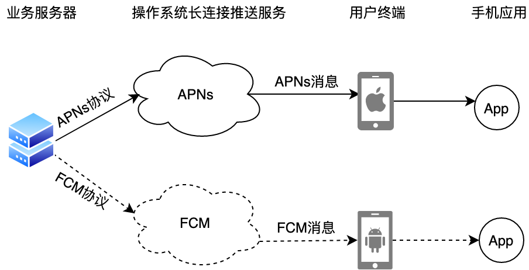
不过，Google 服务在大陆地区使用并不稳定，因此国行 Android 手机通常会把 Google 服务换成自己的服务，定制一套推送标准。而这对开发者来说，无疑是增大了适配负担。所以针对 Android 端，我们通常会使用第三方推送服务，比如极光推送、友盟推送等。
虽然这些第三方推送服务使用自建的长连接，无法享受操作系统底层的优化，但它们会对所有使用推送服务的 App 共享推送通道，只要有一个使用第三方推送服务的应用没被系统杀死，就可以让消息及时送达。
而另一方面，这些第三方服务简化了业务服务器与手机推送服务建立连接的操作，使得我们的业务服务器通过简单的 API 调用就可以完成消息推送。
而为了保持 Android/iOS 方案的统一，在 iOS 上我们也会使用封装了 APNs 通信的第三方推送服务。
第三方推送的服务流程，如下图所示。
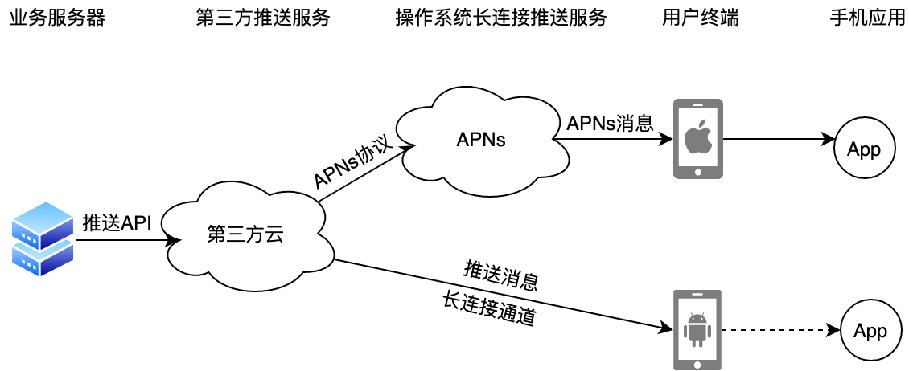
这些第三方推送服务厂商提供的能力和接入流程大都一致，考虑到极光的社区和生态相对活跃，所以今天我们就以极光为例，来看看在 Flutter 应用中如何才能引用原生的推送能力。
原生推送接入流程
要想在 Flutter 中接收推送消息，我们需要把原生的推送能力暴露给 Flutter 应用，即在原生代码宿主实现推送能力（极光 SDK）的接入，并通过方法通道提供给 Dart 层感知推送消息的机制。
插件工程
在第 26 篇文章中，我们学习了如何在原生工程中的 Flutter 应用入口注册原生代码宿主回调，从而实现 Dart 层调用原生接口的方案。这种方案简单直接，适用于 Dart 层与原生接口之间交互代码量少、数据流动清晰的场景。
但对于推送这种涉及 Dart 与原生多方数据流转、代码量大的模块，这种与工程耦合的方案就不利于独立开发维护了。这时，我们需要使用 Flutter 提供的插件工程对其进行单独封装。
Flutter 的插件工程与普通的应用工程类似，都有 android 和 ios 目录，这也是我们完成平台相关逻辑代码的地方，而 Flutter 工程插件的注册，则仍会在应用的入口完成。除此之外，插件工程还内嵌了一个 example 工程，这是一个引用了插件代码的普通 Flutter 应用工程。我们通过 example 工程，可以直接调试插件功能。
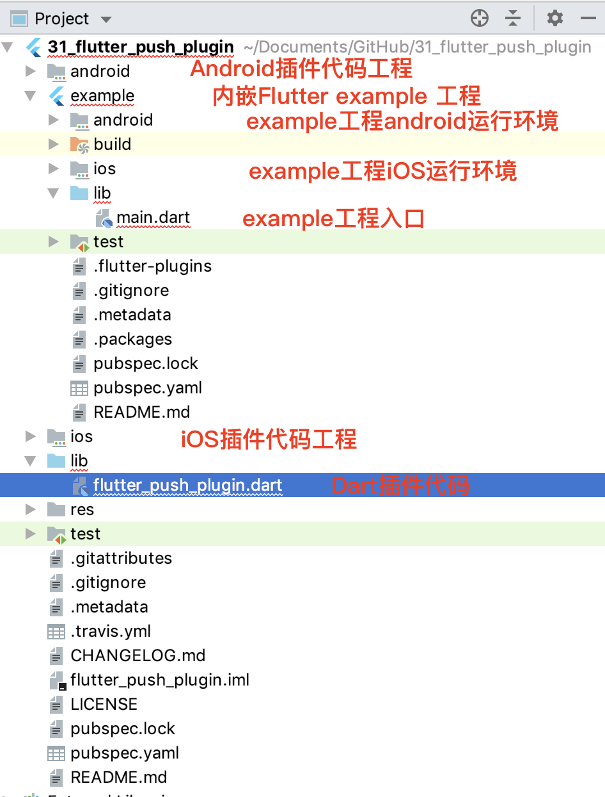
在了解了整体工程的目录结构之后，接下来我们需要去 Dart 插件代码所在的 flutter_push_plugin.dart 文件，实现 Dart 层的推送接口封装。
Dart 接口实现
为了实现消息的准确触达，我们需要提供一个可以标识手机上 App 的地址，即 token 或 id。一旦完成地址的上报，我们就可以等待业务服务器给我们发消息了。
因为我们需要使用极光这样的第三方推送服务，所以还得进行一些前置的应用信息关联绑定，以及 SDK 的初始化工作。可以看到，对于一个应用而言，接入推送的过程可以拆解为以下三步：
- 初始化极光 SDK；
- 获取地址 id；
- 注册消息通知。
这三步对应着在 Dart 层需要封装的 3 个原生接口调用：setup、registrationID 和 setOpenNotificationHandler。
前两个接口是在方法通道上调用原生代码宿主提供的方法，而注册消息通知的回调函数 setOpenNotificationHandler 则相反，是原生代码宿主在方法通道上调用 Dart 层所提供的事件回调，因此我们需要在方法通道上为原生代码宿主注册反向回调方法，让原生代码宿主收到消息后可以直接通知它。
另外，考虑到推送是整个应用共享的能力，因此我们将 FlutterPushPlugin 这个类封装成了单例：
//Flutter Push 插件class FlutterPushPlugin { // 单例 static final FlutterPushPlugin _instance = new FlutterPushPlugin.private(const MethodChannel('flutter_push_plugin')); // 方法通道 final MethodChannel _channel; // 消息回调 EventHandler _onOpenNotification; // 构造方法 FlutterPushPlugin.private(MethodChannel channel) : _channel = channel { // 注册原生反向回调方法，让原生代码宿主可以执行 onOpenNotification 方法 _channel.setMethodCallHandler(_handleMethod); } // 初始化极光 SDK setupWithAppID(String appID) { _channel.invokeMethod("setup", appID); } // 注册消息通知 setOpenNotificationHandler(EventHandler onOpenNotification) { _onOpenNotification = onOpenNotification; } // 注册原生反向回调方法，让原生代码宿主可以执行 onOpenNotification 方法 Future<Null> _handleMethod(MethodCall call) { switch (call.method) { case "onOpenNotification": return _onOpenNotification(call.arguments); default: throw new UnsupportedError("Unrecognized Event"); } } // 获取地址 id Future<String> get registrationID async { final String regID = await _channel.invokeMethod('getRegistrationID'); return regID; }}Dart 层是原生代码宿主的代理，可以看到这一层的接口设计算是简单。接下来，我们分别去接管推送的 Android 和 iOS 平台上完成相应的实现。
Android 接口实现
考虑到 Android 平台的推送配置工作相对较少，因此我们先用 Android Studio 打开 example 下的 android 工程进行插件开发工作。需要注意的是，由于 android 子工程的运行依赖于 Flutter 工程编译构建产物，所以在打开 android 工程进行开发前，你需要确保整个工程代码至少 build 过一次，否则 IDE 会报错。
备注：以下操作步骤参考极光 Android SDK 集成指南。
首先，我们需要在插件工程下的 build.gradle 引入极光 SDK，即 jpush 与 jcore：
dependencies { implementation 'cn.jiguang.sdk:jpush:3.3.4' implementation 'cn.jiguang.sdk:jcore:2.1.2'}然后，在原生接口 FlutterPushPlugin 类中，依次把 Dart 层封装的 3 个接口调用，即 setup、getRegistrationID 与 onOpenNotification，提供极光 Android SDK 的实现版本。
需要注意的是，由于极光 Android SDK 的信息绑定是在应用的打包配置里设置，并不需要通过代码完成（iOS 才需要），因此 setup 方法的 Android 版本是一个空实现：
public class FlutterPushPlugin implements MethodCallHandler { // 注册器，通常为 MainActivity public final Registrar registrar; // 方法通道 private final MethodChannel channel; // 插件实例 public static FlutterPushPlugin instance; // 注册插件 public static void registerWith(Registrar registrar) { // 注册方法通道 final MethodChannel channel = new MethodChannel(registrar.messenger(), "flutter_push_plugin"); instance = new FlutterPushPlugin(registrar, channel); channel.setMethodCallHandler(instance); // 把初始化极光 SDK 提前至插件注册时 JPushInterface.setDebugMode(true); JPushInterface.init(registrar.activity().getApplicationContext()); } // 私有构造方法 private FlutterPushPlugin(Registrar registrar, MethodChannel channel) { this.registrar = registrar; this.channel = channel; } // 方法回调 @Override public void onMethodCall(MethodCall call, Result result) { if (call.method.equals("setup")) { // 极光 Android SDK 的初始化工作需要在 App 工程中配置，因此不需要代码实现 result.success(0); } else if (call.method.equals("getRegistrationID")) { // 获取极光推送地址标识符 result.success(JPushInterface.getRegistrationID(registrar.context())); } else { result.notImplemented(); } } public void callbackNotificationOpened(NotificationMessage message) { // 将推送消息回调给 Dart 层 channel.invokeMethod("onOpenNotification",message.notificationContent); }}可以看到，我们的 FlutterPushPlugin 类中，仅提供了 callbackNotificationOpened 这个工具方法，用于推送消息参数回调给 Dart，但这个类本身并没有去监听极光 SDK 的推送消息。
为了获取推送消息，我们分别需要继承极光 SDK 提供的两个类：JCommonService 和 JPushMessageReceiver。
- JCommonService 是一个后台 Service，实际上是极光共享长连通道的核心，可以在多手机平台上使得推送通道更稳定。
- JPushMessageReceiver 则是一个 BroadcastReceiver，推送消息的获取都是通过它实现的。我们可以通过覆盖其 onNotifyMessageOpened 方法，从而在用户点击系统推送消息时获取到通知。
作为 BroadcastReceiver 的 JPushMessageReceiver，可以长期在后台存活，监听远端推送消息，但 Flutter 可就不行了，操作系统会随时释放掉后台应用所占用的资源。因此，在用户点击推送时，我们在收到相应的消息回调后，需要做的第一件事情不是立刻通知 Flutter，而是应该启动应用的 MainActivity。在确保 Flutter 已经完全初始化后，才能通知 Flutter 有新的推送消息。
因此在下面的代码中，我们在打开 MainActivity 后，等待了 1 秒，才执行相应的 Flutter 回调通知：
//JPushXCustomService.java// 长连通道核心，可以使推送通道更稳定public class JPushXCustomService extends JCommonService {} //JPushXMessageReceiver.java// 获取推送消息的 Receiverpublic class JPushXMessageReceiver extends JPushMessageReceiver { // 用户点击推送消息回调 @Override public void onNotifyMessageOpened(Context context, final NotificationMessage message) { try { // 找到 MainActivity String mainClassName = context.getApplicationContext().getPackageName() + ".MainActivity"; Intent i = new Intent(context, Class.forName(mainClassName)); i.addFlags(Intent.FLAG_ACTIVITY_NEW_TASK | Intent.FLAG_ACTIVITY_SINGLE_TOP); // 启动主 Activity context.startActivity(i); } catch (Exception e) { Log.e("tag"," 找不到 MainActivity"); } new Timer().schedule(new TimerTask() { @Override public void run() { FlutterPushPlugin.instance.callbackNotificationOpened(message); } },1000); // 延迟 1 秒通知 Dart }}最后，我们还需要在插件工程的 AndroidManifest.xml 中，分别声明 receiver JPushXMessageReceiver 和 service JPushXCustomService，完成对系统的注册：
...<application> <!-- 注册推送消息接收类 --> <receiver android:name=".JPushXMessageReceiver"> <intent-filter> <action android:name="cn.jpush.android.intent.RECEIVE_MESSAGE" /> <category android:name="${applicationId}" /> </intent-filter> </receiver> <!-- 注册长连通道 Service --> <service android:name=".JPushXCustomService" android:enabled="true" android:exported="false" android:process=":pushcore"> <intent-filter> <action android:name="cn.jiguang.user.service.action" /> </intent-filter> </service></application>...接收消息和回调消息的功能完成后，FlutterPushPlugin 插件的 Android 部分就搞定了。接下来，我们去开发插件的 iOS 部分。
iOS 接口实现
与 Android 类似，我们需要使用 Xcode 打开 example 下的 ios 工程进行插件开发工作。同样，在打开 ios 工程前，你需要确保整个工程代码至少 build 过一次，否则 IDE 会报错。
备注：以下操作步骤参考极光 iOS SDK 集成指南
首先，我们需要在插件工程下的 flutter_push_plugin.podspec 文件中引入极光 SDK，即 jpush。这里，我们选用了不使用广告 id 的版本：
Pod::Spec.new do |s| ... s.dependency 'JPush', '3.2.2-noidfa'end然后，在原生接口 FlutterPushPlugin 类中，同样依次为 setup、getRegistrationID 与 onOpenNotification，提供极光 iOS SDK 的实现版本。
需要注意的是，APNs 的推送消息是在 ApplicationDelegate 中回调的，所以我们需要在注册插件时，为插件提供同名的回调函数，让极光 SDK 把推送消息转发到插件的回调函数中。
与 Android 类似，在极光 SDK 收到推送消息时，我们的应用可能处于后台，因此在用户点击了推送消息，把 Flutter 应用唤醒时，我们应该在确保 Flutter 已经完全初始化后，才能通知 Flutter 有新的推送消息。
因此在下面的代码中，我们在用户点击了推送消息后也等待了 1 秒，才执行相应的 Flutter 回调通知：
@implementation FlutterPushPlugin// 注册插件+ (void)registerWithRegistrar:(NSObject<FlutterPluginRegistrar>*)registrar { // 注册方法通道 FlutterMethodChannel* channel = [FlutterMethodChannel methodChannelWithName:@"flutter_push_plugin" binaryMessenger:[registrar messenger]]; // 初始化插件实例，绑定方法通道 FlutterPushPlugin* instance = [[FlutterPushPlugin alloc] init]; instance.channel = channel; // 为插件提供 ApplicationDelegate 回调方法 [registrar addApplicationDelegate:instance]; // 注册方法通道回调函数 [registrar addMethodCallDelegate:instance channel:channel];}// 处理方法调用- (void)handleMethodCall:(FlutterMethodCall*)call result:(FlutterResult)result { if([@"setup" isEqualToString:call.method]) { // 极光 SDK 初始化方法 [JPUSHService setupWithOption:self.launchOptions appKey:call.arguments channel:@"App Store" apsForProduction:YES advertisingIdentifier:nil]; } else if ([@"getRegistrationID" isEqualToString:call.method]) { // 获取极光推送地址标识符 [JPUSHService registrationIDCompletionHandler:^(int resCode, NSString *registrationID) { result(registrationID); }]; } else { // 方法未实现 result(FlutterMethodNotImplemented); }}// 应用程序启动回调-(BOOL)application:(UIApplication *)application didFinishLaunchingWithOptions:(NSDictionary *)launchOptions { // 初始化极光推送服务 JPUSHRegisterEntity * entity = [[JPUSHRegisterEntity alloc] init]; // 设置推送权限 entity.types = JPAuthorizationOptionAlert|JPAuthorizationOptionBadge|JPAuthorizationOptionSound; // 请求推送服务 [JPUSHService registerForRemoteNotificationConfig:entity delegate:self]; // 存储 App 启动状态，用于后续初始化调用 self.launchOptions = launchOptions; return YES;}// 推送 token 回调- (void)application:(UIApplication *)application didRegisterForRemoteNotificationsWithDeviceToken:(NSData *)deviceToken { /// 注册 DeviceToken，换取极光推送地址标识符 [JPUSHService registerDeviceToken:deviceToken];}// 推送被点击回调- (void)jpushNotificationCenter:(UNUserNotificationCenter *)center didReceiveNotificationResponse:(UNNotificationResponse *)response withCompletionHandler:(void(^)(void))completionHandler { // 获取推送消息 NSDictionary * userInfo = response.notification.request.content.userInfo; NSString *content = userInfo[@"aps"][@"alert"]; if ([content isKindOfClass:[NSDictionary class]]) { content = userInfo[@"aps"][@"alert"][@"body"]; } // 延迟 1 秒通知 Flutter，确保 Flutter 应用已完成初始化 dispatch_after(dispatch_time(DISPATCH_TIME_NOW, (int64_t)(1 * NSEC_PER_SEC)), dispatch_get_main_queue(), ^{ [self.channel invokeMethod:@"onOpenNotification" arguments:content]; }); // 清除应用的小红点 UIApplication.sharedApplication.applicationIconBadgeNumber = 0; // 通知系统，推送回调处理完毕 completionHandler(); }// 前台应用收到了推送消息- (void)jpushNotificationCenter:(UNUserNotificationCenter *)center willPresentNotification:(UNNotification *)notification withCompletionHandler:(void (^)(NSInteger options))completionHandler { // 通知系统展示推送消息提示 completionHandler(UNNotificationPresentationOptionAlert); }@end至此，在完成了极光 iOS SDK 的接口封装之后，FlutterPushPlugin 插件的 iOS 部分也搞定了。
FlutterPushPlugin 插件为 Flutter 应用提供了原生推送的封装，不过要想 example 工程能够真正地接收到推送消息，我们还需要对 exmaple 工程进行最后的配置，即：为它提供应用推送证书，并关联极光应用配置。
应用工程配置
在单独为 Android/iOS 应用进行推送配置之前，我们首先需要去极光的官方网站，为 example 应用注册一个唯一标识符（即 AppKey）：
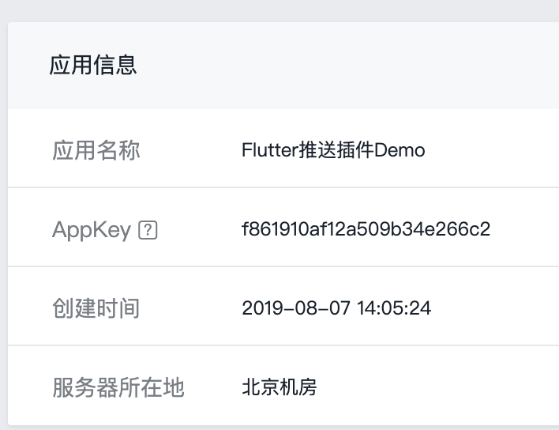
在得到了 AppKey 之后，我们需要依次进行 Android 与 iOS 的配置工作。
Android 的配置工作相对简单，整个配置过程完全是应用与极光 SDK 的关联工作。
首先，根据 example 的 Android 工程包名，完成 Android 工程的推送注册：
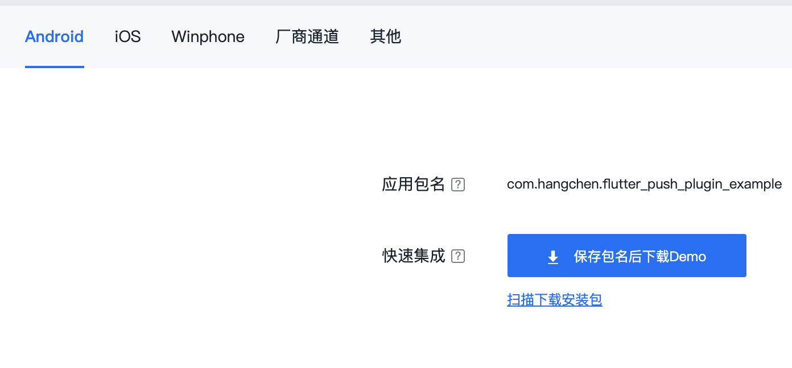
然后，通过 AppKey，在 app 的 build.gradle 文件中实现极光信息的绑定：
defaultConfig { ... //ndk 支持架构 ndk { abiFilters 'armeabi', 'armeabi-v7a', 'arm64-v8a' } manifestPlaceholders = [ JPUSH_PKGNAME : applicationId, // 包名 JPUSH_APPKEY : "f861910af12a509b34e266c2", //JPush 上注册的包名对应的 Appkey JPUSH_CHANNEL : "developer-default", // 填写默认值即可 ]}至此，Android 部分的所有配置工作和接口实现都已经搞定了。接下来，我们再来看看 iOS 的配置实现。
iOS 的应用配置相对 Android 会繁琐一些，因为整个配置过程涉及应用、苹果 APNs 服务、极光三方之间的信息关联。
除了需要在应用内绑定极光信息之外（即 handleMethodCall 中的 setup 方法），还需要在苹果的开发者官网提前申请苹果的推送证书。关于申请证书，苹果提供了.p12 证书和 APNs Auth Key 两种鉴权方式。
这里，我推荐使用更为简单的 Auth Key 方式。申请推送证书的过程，极光官网提供了详细的注册步骤，这里我就不再赘述了。需要注意的是，申请 iOS 的推送证书时，你只能使用付费的苹果开发者账号。
在拿到了 APNs Auth Key 之后，我们同样需要去极光官网，根据 Bundle ID 进行推送设置，并把 Auth Key 上传至极光进行托管，由它完成与苹果的鉴权工作：
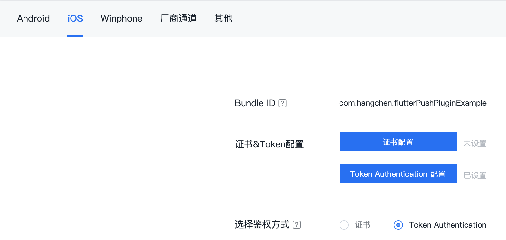
通过上面的步骤，我们已经完成了将推送证书与极光信息绑定的操作，接下来，我们回到 Xcode 打开的 example 工程，进行最后的配置工作。
首先，我们需要为 example 工程开启 Application Target 的 Capabilities->Push Notifications 选项，启动应用的推送能力支持，如下图所示：
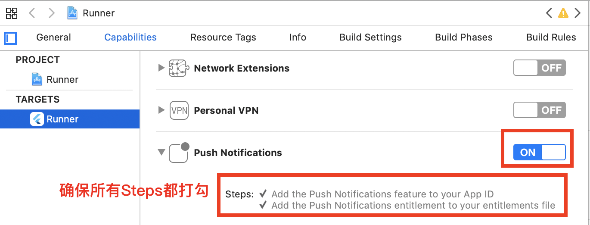
然后，我们需要切换到 Application Target 的 Info 面板，手动配置 NSAppTransportSecurity 键值对，以支持极光 SDK 非 https 域名服务：
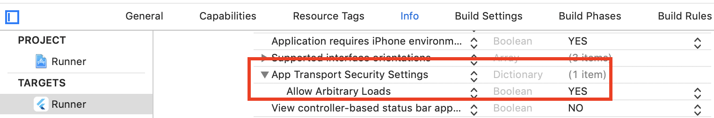
最后，在 Info tab 下的 Bundle identifier 项，把我们刚刚在极光官网注册的 Bundle ID 显式地更新进去：
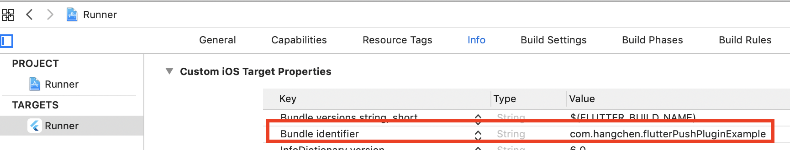
至此，example 工程运行所需的所有原生配置工作和接口实现都已经搞定了。接下来，我们就可以在 example 工程中的 main.dart 文件中，使用 FlutterPushPlugin 插件来实现原生推送能力了。
在下面的代码中，我们在 main 函数的入口，使用插件单例注册了极光推送服务，随后在应用 State 初始化时，获取了极光推送地址，并设置了消息推送回调：
// 获取推送插件单例FlutterPushPlugin fpush = FlutterPushPlugin();void main() { // 使用 AppID 注册极光推送服务 (仅针对 iOS 平台) fpush.setupWithAppID("f861910af12a509b34e266c2"); runApp(MyApp());} class MyApp extends StatefulWidget { @override _MyAppState createState() => _MyAppState();} class _MyAppState extends State<MyApp> { // 极光推送地址 regID String _regID = 'Unknown'; // 接收到的推送消息 String _notification = ""; @override initState() { super.initState(); // 注册推送消息回调 fpush.setOpenNotificationHandler((String message) async { // 刷新界面状态，展示推送消息 setState(() { _notification = message; }); }); // 获取推送地址 regID initPlatformState(); } initPlatformState() async { // 调用插件封装的 regID String regID = await fpush.registrationID; // 刷新界面状态，展示 regID setState(() { _regID = regID; }); } @override Widget build(BuildContext context) { return MaterialApp( home: Scaffold( body: Center( child: Column( children: <Widget>[ // 展示 regID，以及收到的消息 Text('Running on: $_regID\n'), Text('Notification Received: $_notification') ], ), ), ), ); }}点击运行，可以看到，我们的应用已经可以获取到极光推送地址了：
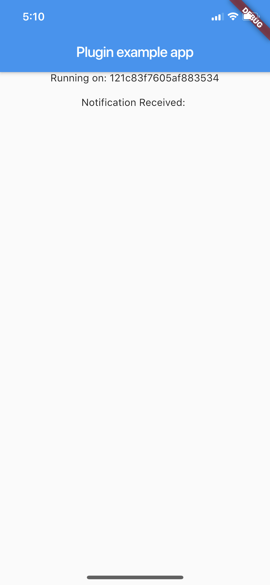
接下来，我们再去极光开发者服务后台发一条真实的推送消息。在服务后台选择我们的 App，随后进入极光推送控制台。这时，我们就可以进行消息推送测试了。
在发送通知一栏，我们把通知标题改为“测试”，通知内容设置为“极光推送测试”；在目标人群一栏，由于是测试账号，我们可以直接选择“广播所有人”，如果你希望精确定位到接收方，也可以提供在应用中获取到的极光推送地址（即 Registration ID）：
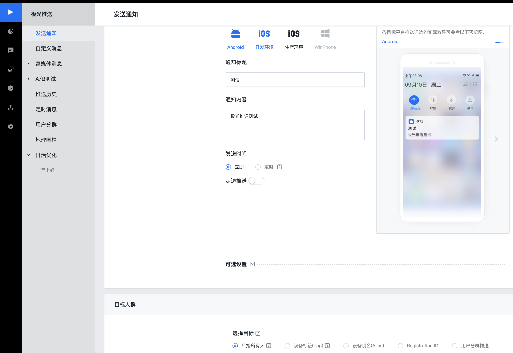
点击发送预览并确认，可以看到，我们的应用不仅可以被来自极光的推送消息唤醒，还可以在 Flutter 应用内收到来自原生宿主转发的消息内容：
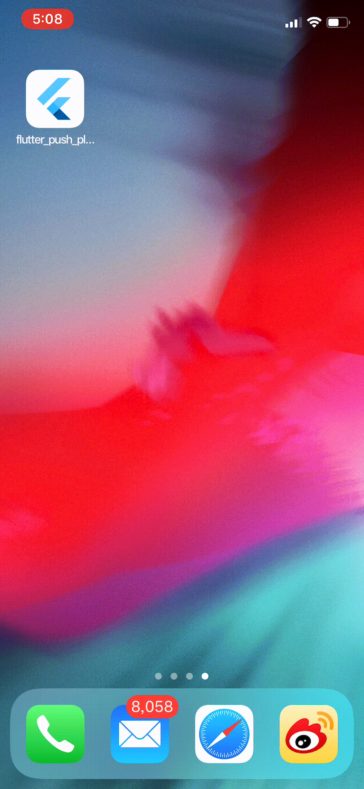
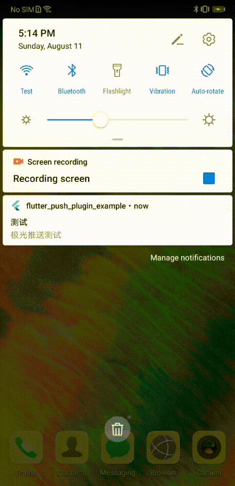
总结
好了，今天的分享就到这里。我们一起来小结一下吧。
我们以 Flutter 插件工程的方式，为极光 SDK 提供了一个 Dart 层的封装。插件工程同时提供了 iOS 和 Android 目录，我们可以在这两个目录下完成原生代码宿主封装，不仅可以为 Dart 层提供接口正向回调（比如，初始化、获取极光推送地址），还可以通过方法通道以反向回调的方式将推送消息转发给 Dart。
今天，我和你分享了很多原生代码宿主的配置、绑定、注册的逻辑。不难发现，推送过程链路长、涉众多、配置复杂，要想在 Flutter 完全实现原生推送能力，工作量主要集中在原生代码宿主，Dart 层能做的事情并不多。
我把今天分享所改造的Flutter_Push_Plugin放到了 GitHub 中，你可以把插件工程下载下来，多运行几次，体会插件工程与普通 Flutter 工程的异同，并加深对消息推送全流程的认识。其中，Flutter_Push_Plugin 提供了实现原生推送功能的最小集合，你可以根据实际需求完善这个插件。
需要注意的是，我们今天的实际工程演示是通过内嵌的 example 工程示例所完成的，如果你有一个独立的 Flutter 工程（比如Flutter_Push_Demo）需要接入 Flutter_Push_Plugin，其配置方式与 example 工程并无不同，唯一的区别是，需要在 pubspec.yaml 文件中将对插件的依赖显示地声明出来而已：
dependencies: flutter_push_plugin: git: url: https://github.com/cyndibaby905/31_flutter_push_plugin.git思考题
在 Flutter_Push_Plugin 的原生实现中，用户点击了推送消息把 Flutter 应用唤醒时，为了确保 Flutter 完成初始化，我们等待了 1 秒才执行相应的 Flutter 回调通知。这段逻辑有需要优化的地方吗？为了让 Flutter 代码能够更快地收到推送消息，你会如何优化呢？
欢迎你在评论区给我留言分享你的观点，我会在下一篇文章中等待你！感谢你的收听，也欢迎你把这篇文章分享给更多的朋友一起阅读。

COMMUNITY NOTES
读者评论
可以在mainactivity里注册flutter初始化完成的监听，回调时把消息通知传递给flutter
为了让 Flutter 代码能够更快地收到推送消息，你会如何优化呢？这里是不是可以原生侧把推送消息保存起来，待flutter启动后直接读取消息
用户点击推送那里应该由flutter来主动注册回调，这样可以避免等待
极光好像有一个flutter的SDK插件，比我们自己封装使用要简单一些，多种思路吧